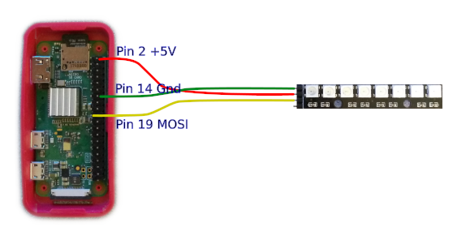

I needed a status indicator for a headless Raspberry Pi Zero project and came
across these PCBs with 8 RGB LEDs
that looked interesting. The LEDs on the PCB are WS2812B that are chained
together and driven by a 3 wire connection, ground, five volts power, and a
single data line.
To cut to the chase, the initial result is a simple C program in the pi0neopixel
repo that provides a demo light show on the LED strip.
Clocks and Bits
The data signal is a combination of a clock and data bits where the pulse
width of each half of a clock cycle determines if the bit for that cycle has
a value of 0 or 1.
Note in the following square wave signals the difference in the time that the
signal is high versus low for a 0 value bit and a 1 value bit. While the cycle
time for each clock pulse is the same the time that the clock signal remains
high is shorter for the 0 bit and longer for a 1 bit.
<= clock cycle =>
______
0 bit | | |
| |________|
_________
1 bit | | |
| |_____|
time +-------+--------+
Each LED pixel takes an RGB value made up of 3 bytes to make up the color
components of the pixel, and this results in a 24 bit value for each LED.
And for the LED strip used in this project there are 8 pixels * 24 bits for
a total of 192 bits, or clock cycles, that need to be applied to the data
line to program the color for each LED in the strip.
Serial Bit Hacking
The Raspberry Pi Zero can be configured to provide a SPI interface
for serial communication and the data for the LED strip is serial. However,
the SPI uses a separate data clock and we need and combination clock and data
signal. So we will ignore the SPI clock signal and use some bit hacking to
turn the SPI data signal into the combination clock and data signal needed
to drive the LEDs.
Enable SPI in /boot/config.txt
[all]
dtparam=spi=on
Raspberry Pi Zero to WS2812B-8
The Raspberry Pi Zero provides the +5V (Pin 2) and Ground (Pin 14) to power
the WS2812B-8 LED PCB and the SPI MOSI (Pin 19) provides the data signal to
program the LED display.

Bits to Nybles to Bytes
To combine the clock and data each bit in the 3 RGB bytes must be converted
into a clock cycle. And these clock cycles must have shorter pulse widths for
0 bits and longer pules widths for the 1 bits. To accomplish this each data
bit will be represented by 4 signal bits to allow shaping of the clock signal
with variable widths.
data signal
0 => 1000
1 => 1110
Each byte in the RGB value will be converted into a total of 4 signal bytes.
As an example, assume we have an RGB value with the R byte value is 218 which
in binary is 0b11011010. Each bit in this byte must be converted into the 4
bit representation for the signal...
(R data byte) 1 1 0 1 1 0 1 0
v v v v v v v v
(4 Signal Bytes) 1110 1110 | 1000 1110 | 1110 1000 | 1110 1000
The R byte value of 218 now becomes 4 signal bytes with the values 238, 142,
232, 232. Also notice in the binary values how the signal always starts high
for each data bit and toggles low before the next data bit.
The following function is from the C demo program and demonstrates how a single
byte value from the RGB data is convereted into the 4 signal bytes that will
be sent out on the SPI data line.
// define the nibble values when converting color bits into the NeoPixel signal
// values in the T0H-T0L and T1H-T1L format, may require adjustment for SPI speed
#define T0MSN 0x80 // Most significant nibble for 0 bit
#define T1MSN 0xE0 // Most significant nibble for 1 bit
#define T0LSN 0x08 // Least significant nibble for 0 bit
#define T1LSN 0x0E // Least significant nibble for 1 bit
// fill the buffer at the provided pointer with the NeoPixel T0H-T0L/T1H-T1L signal for the given RGBW byte
unsigned char* fillColor(unsigned char* colorPt, int RGBWvalue)
{
int loop;
unsigned char _temp;
// loop through 4 sets of 2 bits for the given RGBW byte
for (loop = 0; loop < 4; loop++)
{
// take 2 most significant bits and spread them across one byte
// into ws2812B signal format for T0H-T0L and T1H-T1L
_temp = (RGBWvalue & 0x80) ? T1MSN : T0MSN;
_temp |= (RGBWvalue & 0x40) ? T1LSN : T0LSN;
// store signal byte in buffer
*(colorPt++) = _temp;
// shift to the next two bits
RGBWvalue <<= 2;
}
// return the incremented pointer for potential reuse
return colorPt;
}
Demo Light Show
The C source code contains additional functions to facilitate the initialization,
SPI communication, and the light show demo logic. The end result is what is
shown in the following video...